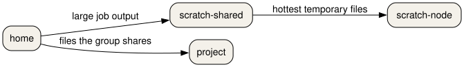

Files and moving data
Last updated on 2026-10-26 | Edit this page
Estimated time: 50 minutes
Overview
Questions
- Which directory is for a running job, and which one is for a file you still need next month?
- Why does a directory of tiny files travel badly?
Objectives
- Choose
home,scratch-shared,scratch-local,scratch-node,projects, orarchivefor a file on Snellius. - Name the three course-cluster mounts and the one that is not shared.
- Pack a directory of small files with
tarbefore you copy it. - Copy with
rsync -avPand check the archive withsha256sum -c. - State what
dcpanddsyncare for, after the small-file case is already packed.
Six places on Snellius
A file's path decides how fast it is, who can read it, and when it disappears.
Home holds 200 GiB. An unused file on scratch-shared is removed after
14 days. Scratch-local keeps a file for 6 days. The class table is
episodes/files/filesystems.tsv.
| place | mount | backup | lifetime | quota |
|---|---|---|---|---|
| home | /home/LOGIN |
nightly | 15 weeks after the project ends | 200 GiB |
| scratch-shared | /scratch-shared/ |
none | 14 days | 8 TiB across scratch areas |
| scratch-local | /scratch-local/ |
none | 6 days | counted in the scratch quota |
| scratch-node | /scratch-node/ |
none | deleted when the job ends | the node disk |
| project | /projects/NAME |
none | the project | by request |
| archive | /archive/ |
nightly | the project | by request |

On the course cluster you have three mounts, not six.
/home is the shared home file system. /project
is large shared scratch, and it is not the same path as Snellius
/projects. /scratch is the local disk on that
machine. It is not shared with the other nodes. There is no tape
archive.
A file written to /scratch on the course login node is
not visible on a compute node. A file written to $TMPDIR on
Snellius disappears when the job ends. Copy results to
/home or /project before the job exits.
Pack, then copy
Fifty single-line files are a bad transfer. Each file is a separate
metadata operation. tar turns them into one file.
rsync -avP copies that file and can continue if the
connection drops. -a keeps timestamps and permissions,
-v lists files, and -P shows progress and
keeps a partial file.
From the machine that has the files, towards the cluster:
On the course cluster the destination is
YOUR_LOGIN@MANAGER:/project/$USER/. Create the directory on
the remote side first if it does not exist.
Then check the bytes. On the source:
Copy the .sha256 file the same way, and on the
destination:
A good check prints the file name and OK.
sha256sum and rsync in this lesson are the
ones on the machine, not an EESSI module.
command -v sha256sum and command -v rsync
should print a path. tar is the system
tar.
When the copy itself is the large job
mpiFileUtils provides dcp,
dsync, and dwalk for copies that need many
nodes. You do not need them for many.tar. You need them
when the tree is huge and a single rsync would take the
whole day. dcp copies. dsync updates a
destination to match a source. dwalk lists a tree in
parallel so you can see what you have.
The module name is site-specific. On the course cluster,
module load 2025 and then
module spider mpiFileUtils. Load the name
spider prints. Do not invent a version. If the spider
search is empty, the tool is not on that stack, and rsync
remains the tool for this lesson's files.
A faded destination
Snellius shared scratch for your user is
YOUR_LOGIN@snellius.surf.nl:/scratch-shared/$USER/. The
course cluster uses /project/$USER/ on
MANAGER.
Predict the surviving file
A job on Snellius writes result.txt into
$TMPDIR and also copies it to
/scratch-shared/$USER/result.txt. The job ends. Which copy
can you still open from the login node the same afternoon, and which
copy is already gone?
/scratch-shared/$USER/result.txt is still there that
afternoon. The $TMPDIR copy lived on the node-local NVMe
and was removed at the end of the job. Two weeks later the scratch copy
can also be gone if nobody has used it. A file you still need next month
belongs on /projects or /archive, not on
scratch.
Pack fifty files and check the sum
The script creates fifty small files, packs them with
tar, and runs sha256sum -c.
packed=50 means the archive contains fifty members.
checksum=ok means the digest matched. If the digest does
not match, copy the archive again. Do not unpack a file that failed the
check and then try to debug the contents.
- On Snellius, home is small and persistent, scratch is large and
temporary, and
$TMPDIRdies with the job. - On the course cluster,
/projectis the shared large disk and/scratchis local to one machine. - Pack many small files with
tarbefore you transfer them. -
rsync -avPcopies the archive.sha256sum -cchecks it. -
dcpanddsyncare for a tree that is already too big for onersync.